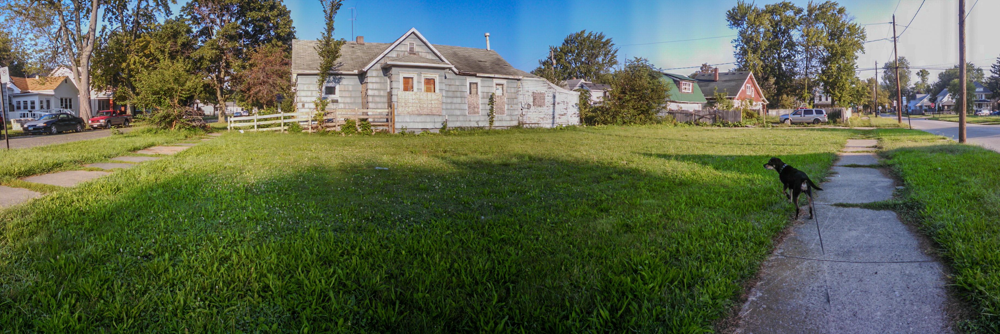

My research examines the production and consequences of spatial inequality in American cities motivated by the simple observation that urban space is organized through expressions of power. Though seemingly self-evident, power is often bracketed out of the dominant theories used to explain neighborhood disparities in violence, patterns of urban change, and household mobility.
Across projects, I use a political economy of place perspective to locate neighborhoods within the web of power relations that link them to external actors and institutions. In particular, I show how state and market actors shape neighborhood conditions through housing markets and environmental siting decisions. This framework emphasizes the tension between neighborhoods as communities and as commodities, and demonstrates how capital accumulation and disinvestment produce spaces of marginalization, exploitation, and resident powerlessness.
My work links urban sociology, criminology, and geography under a shared framework of structural marginalization, highlighting how these dynamics deepen racial and class inequalities while driving disparities in neighborhood violence and extending the collateral consequences of criminal justice contact.
Current projects build from this agenda in three strands:
One line of work conceptualizes state-market cooperation in the siting of environmental burdens as a driver of place marginalization and violence.
Another examines housing exploitation, showing how substandard rentals and landlord milking practices function as systemic levers of disinvestment that produce neighborhood decline with consequences for violence.
A third, collaborative line with Brielle Bryan investigates the consequences of place exclusion through landlord criminal record screening for individuals after criminal justice contact. Together, these projects advance theory while identifying policy interventions in housing, land use, and urban planning that confront structural inequality directly.